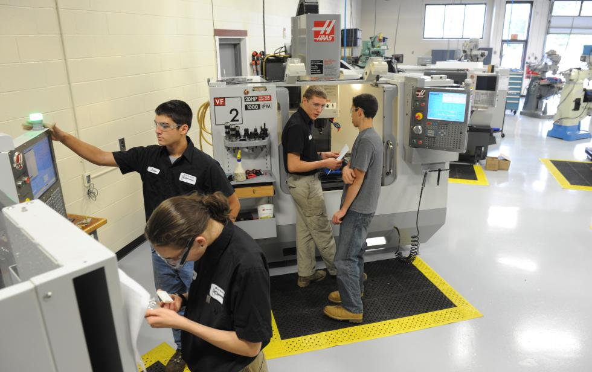

The robots Graco has purchased recently have a greater arsenal of tools and take less time to swap between them. This significantly cuts down on their setup time, and increases capacity.
Many of Graco's new hires undergo a several month training period before using machine tools specific to the company. These employees are then better suited to operate them in the future and produce more with less defects.
Graco's production level as a whole is relatively steady throughout the year. To meet demand, they have 3 worker shifts. According to the tour guide, they usually operate at 85% of max capacity, to give them a reasonable buffer if there is a surge in demand.